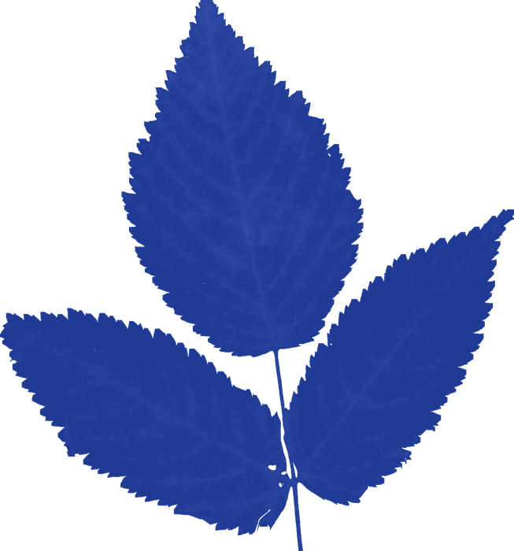
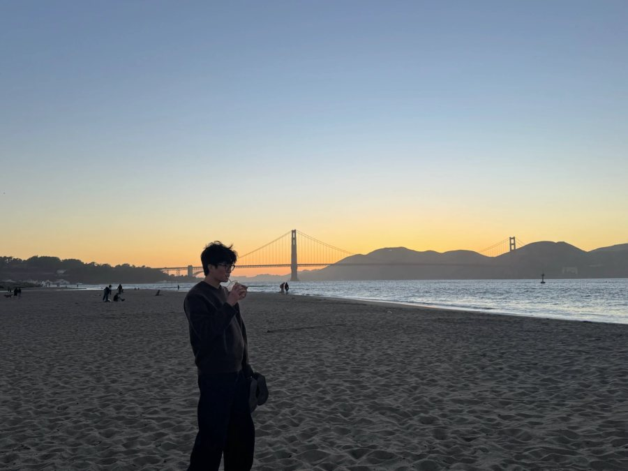

Ian Kim
Ian Kim
Hi, I'm Ian, a product designer at UC Davis
Designing with an artist's eye for detail
Currently designing Moober and Buzzit 2 live apps

Drag the leavesSelected work
Product design

A bit about me

I started out in fine arts, then moved into product design to make things people use every day.
From San Francisco, studying design at UC Davis. Off screen I sketch portraits, make beats and hunt for good food.
More about me →︎Ian Kim, 2026Built with care, and a little sunlight